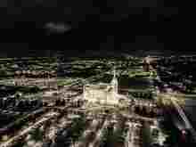
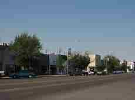

BYU-I Activities
Brigham Young University Idaho is a great university that hosts thousands of students every semester. Not only will you progress towards your degree, but you can connect with hundreds of new friends.

Photo by Rick Robinson on Unsplash (from the client site plan).
Whether you are thinking about visiting, new in town, or even a local, this website is here to help you have some fun while you are with us. It can sometimes seem daunting to face the weekend without a game plan for something to do, but there is so much to do in Rexburg.
We hope you are able to enjoy the local scenery.
Brigham Young University Idaho is a great university that hosts thousands of students every semester. Not only will you progress towards your degree, but you can connect with hundreds of new friends.

Don't forget to enjoy the local activities!
Photo by Ken Lund on Flickr (from the client site plan).